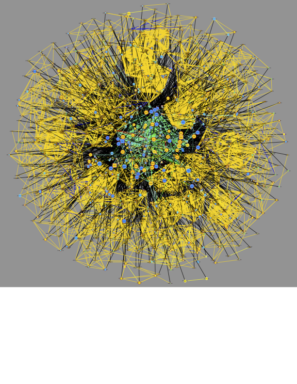
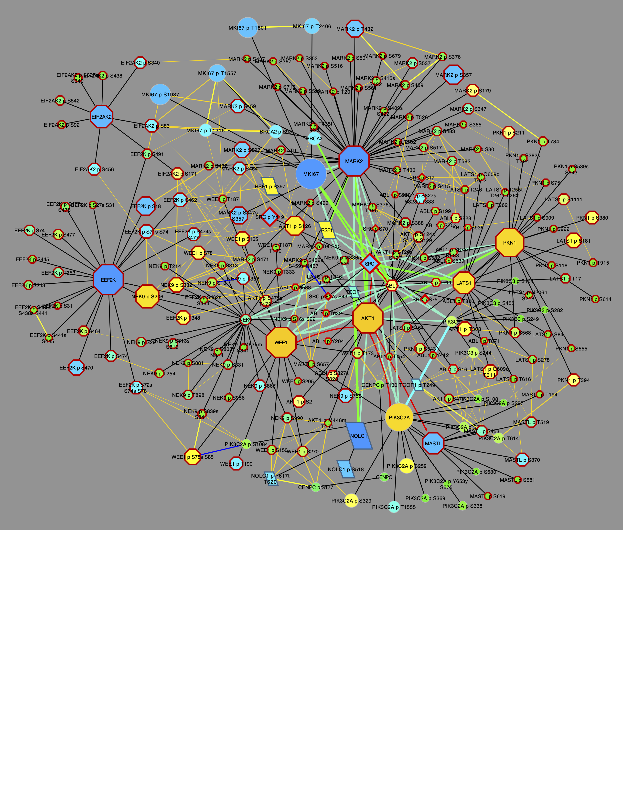
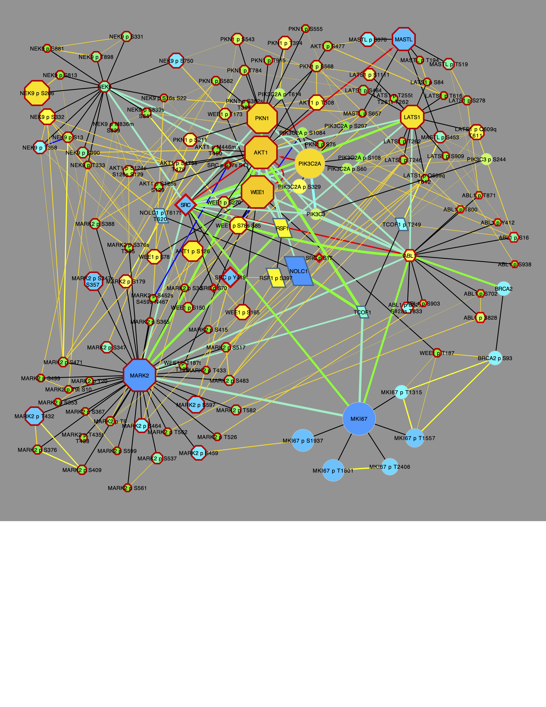

BRCA Networks
Nagashree Avabhrath, Mikhail Ukrainetz, Madison Moffett, Grant Smith, Lucia Williams, Mark Grimes
2026-05-29
Source:vignettes/BRCANetworks.Rmd
BRCANetworks.RmdThis tutorial will load and create networks from the breast cancer cohort (BRCA, N = 122), produced by
Proteogenomic landscape of breast cancer tumorigenesis and targeted therapy Krug, K., Jaehnig, E. J., Satpathy, S., Blumenberg, L., Karpova, A., Anurag, M., et al. Cell 183, 1436PTMsToPathways::name6.e31
And downloaded from Supplemental data S2 from
PhosphoDisco: A Toolkit for Co-regulated Phosphorylation Module Discovery in Phosphoproteomic Data Schraink, T., Blumenberg, L., Hussey, G., George, S., Miller, B., Mathew, N., Gonzalez-Robles, T.J., Sviderskiy, V., Papagiannakopoulos, T., Possemato, R., et al. Mol Cell Proteomics 22, 100596. 10.1016/j.mcpro.2023.100596
First, let’s load the PTMsToPathways package so its functions are available:
Preprocess data for PTMsToPathways functions
The BRCA data table described above is provided with the PTMsToPathways package and and can be read in as follows:
file_path <- system.file("extdata", "PhosphoDiscoData_mmc9.txt", package = "PTMsToPathways")
newphos <- utils::read.table(file_path, header = TRUE,
stringsAsFactors = FALSE, sep = "\t", comment.char = "#",
na.strings = "", quote = "", fill = TRUE)It has 4237 rows and 124 columns representing 4237 phosphosites and 122 samples with phosphoproteomic data.
The first two columns are gene_symbol and
variable_sites_names which we will use to create row names
for the PTM table to match the expected input format for the
PTMsToPathways functions. The Raw Data
Processing vignette gives another example of how to process raw data
tables to create the expected input format for the PTMsToPathways
functions. Here are the first few rows and columns of the data
frame:
head(newphos[, 1:5])
>> gene_symbol variable_sites_names X11BR047 X11BR043 X11BR049
>> 1 ACTN1 S6s 0.2936 -1.9643 -0.9256
>> 2 BAZ2A S1783s -1.2947 1.5820 -0.4770
>> 3 BRCA2 S93s -1.5739 0.5702 -1.1614
>> 4 C12orf45 S178s -3.6418 0.3764 -1.4522
>> 5 C17orf49 S96s -1.1685 0.2572 0.1649
>> 6 C6orf106 S215s -2.7001 0.2895 -2.7325Now we will process the first two columns to create row names for the
PTM table. We extract the amino acid and the site number from the
variable_sites_names column and remove trailing letters
from the site number if they exist.
newphos$Amino.Acid <- sapply(newphos$variable_sites_names, function(x) substring (x, 1, 1))
newphos$Site <- trimws(substring(newphos$variable_sites_names, 2))
newphos$Site <- sub("[a-z]$", "", newphos$Site)
head(newphos[, c("gene_symbol", "variable_sites_names", "Amino.Acid", "Site")])
>> gene_symbol variable_sites_names Amino.Acid Site
>> 1 ACTN1 S6s S 6
>> 2 BAZ2A S1783s S 1783
>> 3 BRCA2 S93s S 93
>> 4 C12orf45 S178s S 178
>> 5 C17orf49 S96s S 96
>> 6 C6orf106 S215s S 215Now use the PTMsToPathways function name.peptide to
create peptide names for the row names of the PTM table.
newphos$Peptide.Name <- mapply(
name.peptide, genes = newphos$gene_symbol,
sites = newphos$Site, aa = newphos$Amino.Acid)Create ptmtable with PTMs as rows and samples as columns
for use in the next steps, and remove the columns we used to create the
row names.
phosdata <- newphos[, 3:ncol(newphos), ]
rownames(phosdata) <- newphos$Peptide.Name
phosdata <- phosdata[, !(names(phosdata) %in% c("gene_symbol", "variable_sites_names", "Amino.Acid", "Site", "Peptide.Name"))]
ptmtable <- phosdata
head(ptmtable[, 1:5])
>> X11BR047 X11BR043 X11BR049 X11BR023 X18BR010
>> ACTN1 p S6 0.2936 -1.9643 -0.9256 -2.6409 -0.8071
>> BAZ2A p S1783 -1.2947 1.5820 -0.4770 1.5900 -1.0283
>> BRCA2 p S93 -1.5739 0.5702 -1.1614 0.5241 -0.3049
>> C12orf45 p S178 -3.6418 0.3764 -1.4522 0.1373 -0.2151
>> C17orf49 p S96 -1.1685 0.2572 0.1649 1.8283 -1.0399
>> C6orf106 p S215 -2.7001 0.2895 -2.7325 1.6096 -1.7117Create Clusters and Co-Cluster Correlation Networks (CCCNs)
Next, we create clusters and networks from those clusters as in the Creating Networks vignette. This takes about 10 minutes on a laptop, so we provide both the code and the pre-computed results for this step. To re-run the analysis, run, the following:
set.seed(88)
clusterlist.data <- MakeClusterList(ptmtable,
keeplength = 3, toolong = 3.5)Or load in pre-computed results from within the PTMsToPathways package:
clusterlist.data <- brca_clusterlist_data
CCCN.data <- brca_CCCN_dataWhether computed or loaded, the cluster.data and
CCCN.data are lists that contain the following
elements:
common.clusters <- clusterlist.data[[1]]
adj.consensus.matrix <- clusterlist.data[[2]]
ptm.correlation.matrix <- clusterlist.data[[3]]These are required to create the PTM and Gene co-cluster correlation networks.
CCCN.data <- MakeCorrelationNetwork(adj.consensus.matrix,
ptm.correlation.matrix)
>> Making PTM CCCN
>> PTM CCCN complete after 0.87 secs total.
>> Making Gene CCCN
>> Gene CCCN complete after 18.35 secs total.
ptm.cccn.edges <- CCCN.data[[1]]
gene.cccn.edges <- CCCN.data[[2]]
gene.cccn.nodes <- CCCN.data[[3]]We expect >200 common clusters:
If desired, the clusters can be trimmed to those > 4. This reduces the number of clusters from 231 to 204.
cclength <- sapply(common.clusters, length)
common.clusters4 <- common.clusters[which(cclength>3)]
length(common.clusters4)
>> [1] 204We can use graph.ptm.by.cluster to visualize these in a heatmap. To demonstrate, let’s look at the output for the first 3 clusters. PTMs are rows and samples are columns, and color represents the value of the PTM in that sample. Black indicates missing values.
dir.create(fig_dir, recursive = TRUE, showWarnings = FALSE)
output <- file.path(fig_dir, "ptm_all_clusters_l4.pdf")
res <- graph.ptm.by.cluster(
ptmtable = ptmtable,
common.clusters = common.clusters4[1:3], # use all clusters > 4, only first 3
filename = output,
order.rows = "slope",
zlim = 3,
show.row.labels = FALSE,
show.col.labels = TRUE,
col_cex = 0.7
)
>> Heatmap written to: plots//ptm_all_clusters_l4.pdf
knitr::include_graphics(output)PTMsToPathways provides the function EvaluateClusters
which computes the following for each cluster:
-
intensity= total signal after removing the NA fraction of samples for this cluster -
realsamples= samples that are not single-gene/PTM samples for this cluster -
cleargenes= genes/PTMs that fit a pattern that ranks by decreasing total signal -
percent.NA= percentage of missing values in the cluster sub-table
It also computes an index value for every cluster, which
is a composite value computed from the above. The output is ordered by
this index value, so we examine the top 10 clusters
here:
eval_brca <- EvaluateClusters(
common.clusters4, ptmtable,
data.type = "ratio",
use.slope = FALSE,
index.mode = "density",
verbose = FALSE
)
eval_brca[1:10, ]
>> Group no.genes culled.by.slope percent.singlesamplegenes no.samples
>> 201 201 5 0 0 122
>> 204 204 5 0 0 122
>> 130 130 11 0 0 122
>> 13 13 4 0 0 105
>> 194 194 4 0 0 105
>> 145 145 13 0 0 122
>> 103 103 17 0 0 122
>> 86 86 20 0 0 122
>> 71 71 52 0 0 122
>> 59 59 10 0 0 122
>> percent.singlegenesamples total.signal percent.NA intensity Index
>> 201 0 407.1629 0.00000000 407.1629 147.6000
>> 204 0 630.5927 0.00000000 630.5927 147.6000
>> 130 0 785.0943 0.00000000 785.0943 134.1818
>> 13 0 565.5595 0.00000000 565.5595 132.5000
>> 194 0 532.2606 0.00000000 532.2606 132.5000
>> 145 0 1453.0472 0.00000000 1453.0472 132.4615
>> 103 0 1769.5302 0.00000000 1769.5302 130.2353
>> 86 0 1807.7815 0.00000000 1807.7815 129.1500
>> 71 0 4704.2481 0.00000000 4704.2481 125.3654
>> 59 0 1388.7363 0.08196721 1387.5980 125.0500Build Cluster Filtered Networks (CFNs) and Pathway Crosstalk Networks (PCNs)
For PPI edges, the code below demonstrates how to get the STRING-db and GeneMANIA edges from the static human PPI data downloaded as local files. These files are available on Zenodo. Alternatively, the PPI data can be obtained from STRINGdb and GeneMANIA websites as demonstrated in the getting started with P2P vignette.
string_db_filepath <- "your/filepath/here.tsv"
# optional check that the nodenames are consistent with STRINGdb
sym.map <- StandardizeGeneSymbols(gene.cccn.nodes)
identical (unique(sym.map$standard_symbol), gene.cccn.nodes)
# TRUE so no further action is required.
# If there were differences, replace symbol.map = NULL with symbol.map = sym.map
stringdb.edges <- GetSTRINGdb.edges( gene.cccn.edges,
gene.cccn.nodes,
local = TRUE,
string.local.path = string_db_filepath,
combined.score.threshold = 400,
include.transferred = TRUE,
symbol.map = NULL)To avoid downloading the large STRINGdb edge file, edges from the BRCA gene set can be loaded from within the package:
stringdb.edges <- BRCA_stringdb.edges
head(stringdb.edges)
>> source target interaction Weight
>> 1 AAK1 AGFG1 database 500
>> 2 AAK1 GAK experiments 411
>> 3 AAK1 ITSN1 database 500
>> 4 AAK1 NUMBL experiments_transferred 322
>> 5 AAK1 STK11 experiments_transferred 46
>> 6 ABL1 ABL2 experiments 1431The GeneMANIA human PPI edge file contains the following types of interactions: “Genetic Interactions”, “Pathway”, “Physical Interactions”, and “Predicted.”
We choose all but “Genetic Interactions” to include using the
gm.interaction.types parameter in the following
function.
genemania_db_filepath <- "your/filepath/here.tsv"
genemania.edges <- GetGeneMANIA.edges (gm.all.edges.path,
gene.cccn.nodes,
local = TRUE,
genemania.local.path = genemania_db_filepath,
gm.interaction.types = c("Pathway", "Physical Interactions", "Predicted"))And again, to avoid downloading the large GeneMANIA edge file, BRCA gene edges can be loaded from within the package:
genemania.edges <- BRCA_genemania.edges
head(genemania.edges)
>> source target interaction Weight
>> 4815149 CAMK2B CAMK2D Pathway 0.50
>> 4815150 CAMK2B MAP3K7 Pathway 0.50
>> 4815191 CSNK2A1 CSNK2B Pathway 0.42
>> 4815192 CSNK2A2 CSNK2A1 Pathway 0.55
>> 4815193 CSNK2A2 CSNK2B Pathway 0.42
>> 4815223 EGFR MAP2K1 Pathway 0.13Next, we retrieve kinase-substrate edges, then obain the cluster filtered network, retaining PPIs only for proteins whose PTMs co-cluster, as demonstrated in the getting started vignette.
file_path <- system.file("extdata", "Kinase_Substrate_Dataset.txt", package = "PTMsToPathways")
kinsub.edges <- GetKinsub.edges(file_path, gene.cccn.nodes)Now we can build the CFN.
network.list <- BuildClusterFilteredNetwork(gene.cccn.edges,
stringdb.edges,
genemania.edges,
kinsub.edges,
db.filepaths = c())
combined.PPIs <- network.list[[1]]
cfn <- network.list[[2]]
dim(cfn)
cfn.merged <- mergeEdges(cfn)
dim(cfn.merged)
>> [1] 9965 4
>> [1] 2810 4We build the PCN from the BioPlanet pathways as done previously. This takes about a few minutes, so we provide both the code and the pre-computed results for this step. To re-run the analysis, run the following:
bioplanet.file <- system.file("extdata", "bioplanet_pathway_June2025.csv", package = "PTMsToPathways")
PCN.data <- BuildPathwayCrosstalkNetwork(common.clusters, bioplanet.file)Or load in pre-computed results from within the PTMsToPathways package:
PCN.data <- BRCA_PCN.data
pathway.crosstalk.network <- PCN.data[[1]] # 679707 edges
PCNedgelist <- PCN.data[[2]]
pathways.list <- PCN.data[[3]]
dim(pathway.crosstalk.network)
>> [1] 680540 4Now we can explore these networks.
Preprocess modules from Shraink et al.
We will examine the modules from Schraink, et al., 2023, Supplemental
Table S4. Per their description, the
HDBSCAN;min_cluster_size-4 column assigns a module number
to each phosphosite.
PD_module.file <- system.file("extdata", "PhosDiscoModules_mmc11.txt", package = "PTMsToPathways")
PD_module.df <- utils::read.table(PD_module.file, header = TRUE,
stringsAsFactors = FALSE, sep = "\t", comment.char = "#",
na.strings = "", quote = "", fill = TRUE)
dim(PD_module.df) # should be 1017 rows
head(PD_module.df)
>> [1] 1017 3
>> geneSymbol variableSites HDBSCAN.min_cluster_size.4
>> 1 ABCC1 S930s 66
>> 2 ACBD3 S316s 54
>> 3 ACIN1 S655s S657s 61
>> 4 ACIN1 S863s 36
>> 5 ACTN1 S6s 12
>> 6 ADD1 N462n S465s 13We note that there are differences from the PTM table imported above.
We will work with those sites that match between ptmtable
and PD_module.df.
Make peptide names as above:
PD_module.df$Amino.Acid <- sapply(PD_module.df$variableSites, function(x) substring (x, 1, 1))
PD_module.df$Site <- trimws(substring(PD_module.df$variableSites, 2))
PD_module.df$Site <- sub("[a-z]$", "", PD_module.df$Site)
PD_module.df$Peptide.Name <- mapply(
name.peptide, genes = PD_module.df$geneSymbol,
sites = PD_module.df$Site, aa = PD_module.df$Amino.Acid)
head(PD_module.df)
>> geneSymbol variableSites HDBSCAN.min_cluster_size.4 Amino.Acid Site
>> 1 ABCC1 S930s 66 S 930
>> 2 ACBD3 S316s 54 S 316
>> 3 ACIN1 S655s S657s 61 S 655s S657
>> 4 ACIN1 S863s 36 S 863
>> 5 ACTN1 S6s 12 S 6
>> 6 ADD1 N462n S465s 13 N 462n S465
>> Peptide.Name
>> 1 ABCC1 p S930
>> 2 ACBD3 p S316
>> 3 ACIN1 p S655s S657
>> 4 ACIN1 p S863
>> 5 ACTN1 p S6
>> 6 ADD1 p N462n S465Treat modules like our clusters:
PD.module.list <- split(PD_module.df$Peptide.Name, PD_module.df$HDBSCAN.min_cluster_size.4)
length(PD.module.list)
PD.module.list$`68`
>> [1] 69
>> [1] "ARHGAP5 p S1218" "C2CD5 p S295"
>> [3] "CHAMP1 p S282s S284s S286" "CHAMP1 p S286s S297"
>> [5] "CHAMP1 p S378s S379s S382" "CHAMP1 p S603"
>> [7] "EIF2S2 p S105" "EIF2S2 p T111"
>> [9] "KIAA0930 p S309" "LIG1 p S36s S46"
>> [11] "NIPBL p S350" "PKP3 p S253"
>> [13] "PSIP1 p T141" "RBM15B p T551"
>> [15] "RRAGC p S2s S15" "SCAF11 p S796s S802"
>> [17] "SF3B1 p S129s T142" "TOP1 p S112"
>> [19] "WIZ p S180" "WIZ p S196s S201"Let’s get the unique genes in each module to compare to the unique genes in our clusters.
Compare P2P clusters and Schraink, et al. modules
Let’s see which of our clusters have intersections with module 63. We will use this as an example to show how to explore the networks around a particular module of interest.
mod63.intersect <- Filter(length, Map(intersect, common.clusters, list(PD.module.list$`63`)))
mod63.intersect
>> $ConsensusCluster1
>> [1] "BRCA2 p S93"
>>
>> $ConsensusCluster2
>> [1] "C12orf45 p S178" "MICAL3 p S1704" "RANBP2 p S2606"
>>
>> $ConsensusCluster3
>> [1] "CENPC p S177" "DPF2 p T176" "FKBP3 p S152"
>> [4] "NOLC1 p T617t T620"
>>
>> $ConsensusCluster4
>> [1] "CENPC p T130" "WRN p S1133"
>>
>> $ConsensusCluster5
>> [1] "FLNB p S983" "FOXK1 p S213s S223" "HEBP2 p S181"
>> [4] "HIST1H1E p T4" "MEPCE p S254" "RSF1 p S397"
>>
>> $ConsensusCluster6
>> [1] "DOT1L p S834" "EHD1 p T468" "ILF3 p T592" "TCOF1 p T249" "XRCC6 p T455"
>>
>> $ConsensusCluster7
>> [1] "HMGA1 p T39t T53" "TPR p T1672"
>>
>> $ConsensusCluster9
>> [1] "HMGA1 p T42"
>>
>> $ConsensusCluster10
>> [1] "HNRNPK p S216" "MBD2 p S181"
>>
>> $ConsensusCluster11
>> [1] "LIG3 p T209"
>>
>> $ConsensusCluster14
>> [1] "NOLC1 p S518"
>>
>> $ConsensusCluster15
>> [1] "NUP98 p S822"
>>
>> $ConsensusCluster16
>> [1] "ZC3HC1 p S24s T28"Interesctions of more than one PTM were found in several ConsensusClusters.
There are >200 PTMs in the P2P clusters that intersect with module 63:
mod63.clust.ptms <- unlist(c(common.clusters$ConsensusCluster1, common.clusters$ConsensusCluster3, common.clusters$ConsensusCluster4, common.clusters$ConsensusCluster5, common.clusters$ConsensusCluster6))
length(mod63.clust.ptms)
>> [1] 204P2P provides functions to prepare visualizations of these PTMs in Cytoscape. First, we create a
dataframe of node information that can be used with RCy3
functions to create a network in Cytoscape.
funckey <- function_key
cfn.cccn <- ptms_to_cfn(mod63.clust.ptms, cfn = cfn.merged, ptm.cccn.edges = ptm.cccn.edges, ptmtable = ptmtable, pepsep = ";")
cfn_cccn.nodes <- make.cytoscape.node.file(cfn.cccn, funckey, ptmtable,
include.gene.data = TRUE,
include.coclustered.PTMs = TRUE,
ptm.cccn.edges = ptm.cccn.edges)To graph in Cytoscape, use the P2P function
GraphCfn:
g1 <- GraphCfn(cfn.edges = cfn.cccn, cfn.nodes = cfn_cccn.nodes,
Network.title = "CFN/CCCN All PTMs 1", Network.collection = "PTMsToPathways")
The above would create a graph using Cytoscape, which would look like:

This is a complex graph that shows PTMs clusters as cliques connected by yellow correlation edges surrounding a CFN of interconnected gene nodes.
Let’s focus on CDK1 substrates to complement the work done in Schraink, et al., 2023. There are 82 CDK1 edges.
cdk1.kinsub <- filter.edges.1("CDK1", kinsub.edges)
dim(cdk1.kinsub)
head(cdk1.kinsub)
>> [1] 82 4
>> source target interaction Weight
>> 483 CDK1 CHEK1 pp 1
>> 484 CDK1 CLASP2 pp 1
>> 485 CDK1 NOLC1 pp 1
>> 486 CDK1 SRRM2 pp 1
>> 487 CDK1 PAK1 pp 1
>> 488 CDK1 RPS6KB1 pp 1Now let’s get the needed information about these edges:
cdk1.substrates <- cdk1.kinsub [which(cdk1.kinsub$source=="CDK1"), "target"]
cfn_cccn.nodes.cdksubs <- cfn_cccn.nodes[cfn_cccn.nodes$Gene.Name %in% cdk1.substrates, ]Two ways to select for CDK1 substrates are presented. Method 1: Using
RCy3.
RCy3::selectNodes(cfn_cccn.nodes.cdksubs$id, by = "id", preserve=FALSE)
Cy3::selectEdgesConnectingSelectedNodes()
RCy3::createSubnetwork(nodes = RCy3::getSelectedNodes(), edges = RCy3::getSelectedEdges(), nodes.by.col = "id", edges.by.col = "name")Method 2: Using P2P functions.
cfn_cccn.nodes.cdksubs.edges <- filter.edges.0(nodenames = cfn_cccn.nodes.cdksubs$id, edge.file = cfn.cccn)
g2 <- GraphCfn(cfn.edges = cfn_cccn.nodes.cdksubs.edges, cfn.nodes = cfn_cccn.nodes.cdksubs,
Network.title = "CFN/CCCN All PTMs 5", Network.collection = "PTMsToPathways")Both methods give the same result, which looks like this:

Now further simplify the graph to show only CCCN PTMs.
cdksubs.genes <- unique(cfn_cccn.nodes.cdksubs$id)
cdksubs.cfn <- filter.edges.0(cdksubs.genes, cfn.merged)
cdksubs.cfn.cccn <- get.co.clustered.ptms(cdksubs.cfn, ptm.cccn.edges=ptm.cccn.edges)
cdksubs.cfn.cccn.nodes <- make.cytoscape.node.file(cdksubs.cfn.cccn, funckey, ptmtable,
include.gene.data = TRUE,
include.coclustered.PTMs = TRUE)
g3 <- GraphCfn(cfn.edges = cdksubs.cfn.cccn, cfn.nodes = cdksubs.cfn.cccn.nodes,
Network.title = "CFN/CCCN All PTMs 6", Network.collection = "PTMsToPathways")This gives the following graph:

Each of these graphs can be modified to set node size and shape using the following P2P functions that act on the front window in Cytoscape. Note the differences that reflect activation of different cell signaling pathways in tumors with different mutations: X02BR011 (AKT1 missense mutant); X21BR010 (PIK3CA missense mutant); and X05BR045 (TP53 nonsense and MLLT4 frameshift mutants).
setNodeColorToRatios(plotcol="X03BR011")
setNodeColorToRowz(plotcol="X03BR011") # This exaggerates the node size and shape somewhat.
setNodeColorToRatios(plotcol="X21BR010")
setNodeColorToRowz(plotcol="X21BR010")
setNodeColorToRatios(plotcol="X05BR045")
setNodeColorToRowz(plotcol="X05BR045")Note that different samples have dramatically different differences in PTMs that are up or down, which is reflected also in total in gene nodes.
Session Info
sessionInfo()
>> R version 4.6.1 (2026-06-24)
>> Platform: x86_64-pc-linux-gnu
>> Running under: Ubuntu 24.04.4 LTS
>>
>> Matrix products: default
>> BLAS: /usr/lib/x86_64-linux-gnu/openblas-pthread/libblas.so.3
>> LAPACK: /usr/lib/x86_64-linux-gnu/openblas-pthread/libopenblasp-r0.3.26.so; LAPACK version 3.12.0
>>
>> locale:
>> [1] LC_CTYPE=C.UTF-8 LC_NUMERIC=C LC_TIME=C.UTF-8
>> [4] LC_COLLATE=C.UTF-8 LC_MONETARY=C.UTF-8 LC_MESSAGES=C.UTF-8
>> [7] LC_PAPER=C.UTF-8 LC_NAME=C LC_ADDRESS=C
>> [10] LC_TELEPHONE=C LC_MEASUREMENT=C.UTF-8 LC_IDENTIFICATION=C
>>
>> time zone: UTC
>> tzcode source: system (glibc)
>>
>> attached base packages:
>> [1] stats graphics grDevices utils datasets methods base
>>
>> other attached packages:
>> [1] PTMsToPathways_0.99.0
>>
>> loaded via a namespace (and not attached):
>> [1] jsonlite_2.0.0 dplyr_1.2.1 compiler_4.6.1 gtools_3.9.5
>> [5] Rcpp_1.1.1-1.1 tidyselect_1.2.1 bitops_1.0-9 jquerylib_0.1.4
>> [9] systemfonts_1.3.2 textshaping_1.0.5 yaml_2.3.12 fastmap_1.2.0
>> [13] plyr_1.8.9 R6_2.6.1 generics_0.1.4 igraph_2.3.3
>> [17] knitr_1.51 tibble_3.3.1 desc_1.4.3 bslib_0.11.0
>> [21] pillar_1.11.1 rlang_1.2.0 cachem_1.1.0 xfun_0.59
>> [25] fs_2.1.0 caTools_1.18.3 sass_0.4.10 otel_0.2.0
>> [29] cli_3.6.6 pkgdown_2.2.0 withr_3.0.3 magrittr_2.0.5
>> [33] digest_0.6.39 lifecycle_1.0.5 vctrs_0.7.3 KernSmooth_2.23-26
>> [37] evaluate_1.0.5 glue_1.8.1 ragg_1.5.2 rmarkdown_2.31
>> [41] tools_4.6.1 pkgconfig_2.0.3 htmltools_0.5.9 gplots_3.3.0